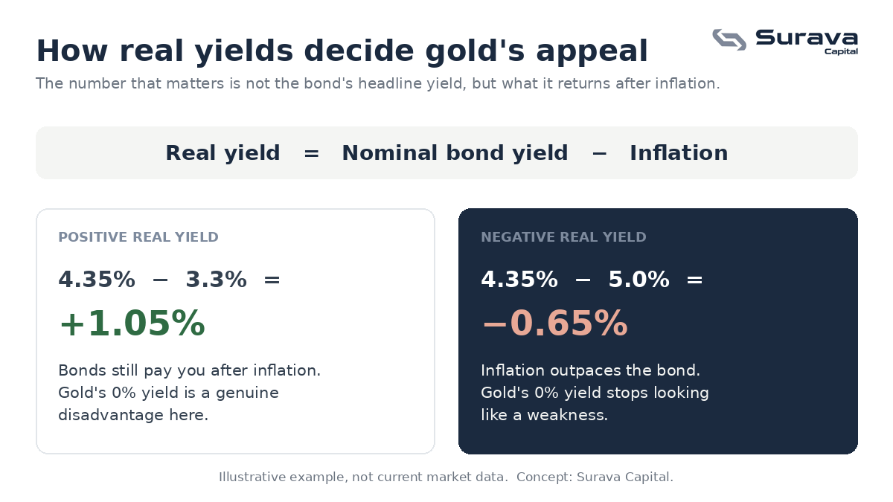

The number that actually matters: the real yield
When you buy a bond, the interest rate printed on it is called the nominal yield. But the number that actually determines your wealth is the real yield, which is the nominal yield minus the inflation rate.
The idea is simple. If a ten-year government bond pays 4.35 percent and inflation is running at 3.3 percent, your real yield is roughly 1 percent. You are making money, but only just. Now imagine inflation climbs to 5 percent. Suddenly you are earning a negative return in real terms. Your bond is technically paying you interest, but inflation is eating more than that interest every year. In that environment, holding a bond means quietly losing purchasing power.
This is where gold comes in. Gold pays no interest. In a high real yield environment that is a genuine disadvantage. But in a near-zero or negative real yield environment, that disadvantage disappears. Gold's zero yield starts to look attractive next to a bond that offers a guaranteed real loss.

What market history shows
The 1970s are the most instructive example. Inflation surged well above bond yields for most of the decade, leaving real yields deeply negative. During that period gold rose from around 35 dollars an ounce to over 800, a gain of more than 2,000 percent in nominal terms. The move ended almost the day Paul Volcker raised interest rates aggressively enough to push real yields firmly back into positive territory. The lesson is that gold does not simply respond to inflation. It responds to the gap between inflation and what you can earn by holding something safer.
The 2000s repeated the pattern in a different key. The Federal Reserve cut rates aggressively after the dot-com crash, pushing real yields close to zero. Gold began a multi-year climb from around 250 dollars to over 1,800 by 2011, when real yields started rising again.
The post-pandemic period added another chapter. With rates near zero and inflation above 7 percent, real yields turned deeply negative and gold hit records. When central banks hiked aggressively through 2022 and 2023, gold pulled back as real yields climbed back above 2 percent.
Why the mechanism matters more than any single price
Across all three episodes the driver is the same. Gold's strongest sustained runs line up with periods when real yields are compressed or negative, and its weakest stretches line up with periods when real yields are clearly positive. That is the variable to watch. Not the inflation headline on its own, and not the bond yield on its own, but the distance between them.
This is also why gold behaves differently from what many people expect. It is not really a bet on chaos. It is a bet on the return you give up by not holding it. When safe assets pay you a healthy return after inflation, that opportunity cost is high and gold struggles. When they do not, the opportunity cost collapses and gold tends to do its work.
One structural factor worth keeping in view
There is a buyer in the current cycle that was not present at the same scale in the 1970s or 2000s: central banks. A number of governments, particularly across Asia and the Middle East, have been steadily shifting reserves away from government bonds and toward gold. That is a slow, structural source of demand that sits underneath the price regardless of what any individual investor does. It does not tell you where gold goes next quarter, but it is part of the backdrop, and it is worth understanding when you read about gold in the news.
The takeaway
We are not calling a number, and nothing here is a suggestion to buy or sell anything. The point is narrower and more useful than a forecast: once you understand that gold tracks the gap between inflation and real returns, you know exactly which variable to watch the next time you see a gold headline. Understanding the mechanism is what turns a confusing asset into a readable one.
This article is for general educational and informational purposes only. It is not investment advice, a recommendation, or an offer of any regulated financial service. Investing involves risk, including the possible loss of principal, and past performance does not indicate future results. Views expressed are those of Surava Capital.